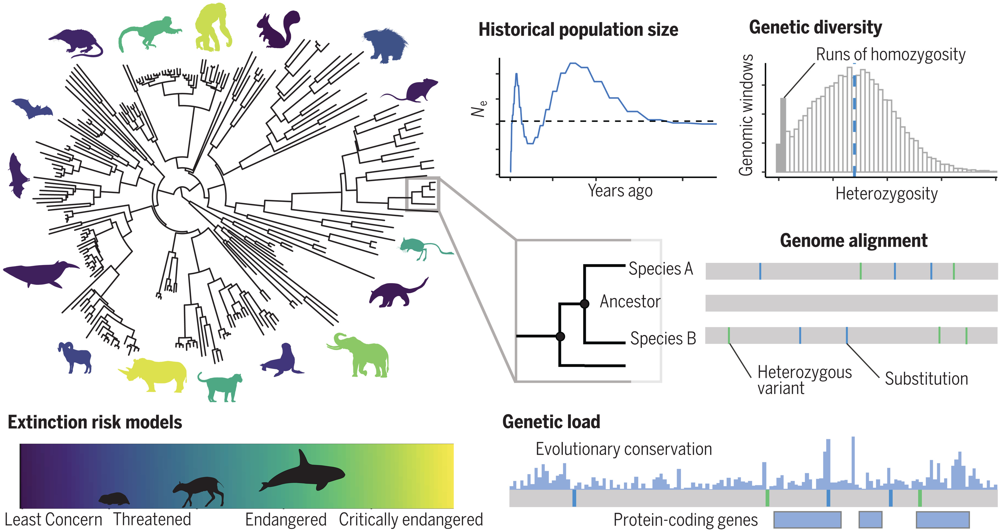
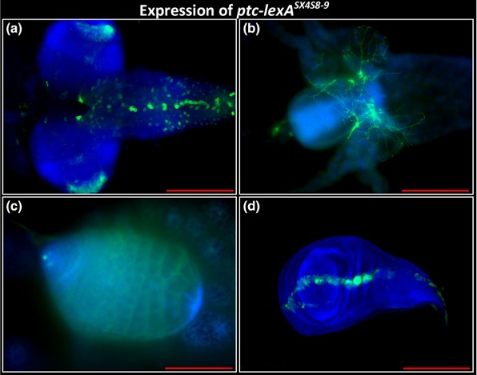
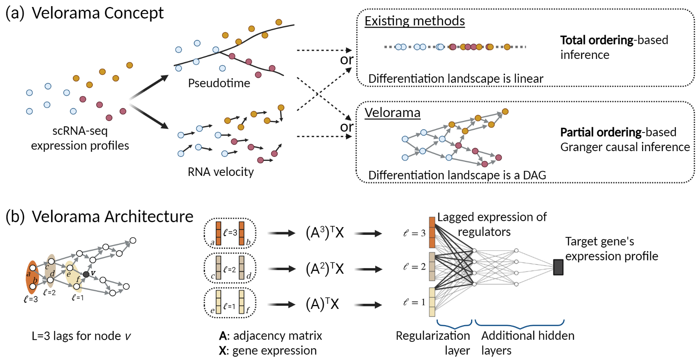
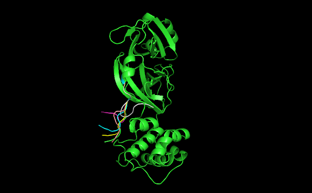

|
Anish Mudide
I'm a freshman at MIT studying Math and Computational Biology. I use deep learning to develop strategies for disease prevention. I'm interested in protein language models, single-cell genomics and interpretability.
Previously, I collaborated with the Zoonomia Project to estimate the extinction risk of species from whole-genome sequences. During the COVID-19 pandemic, I discovered novel SARS-CoV-2 therapeutics targeting intrinsically disordered regions.
Email /
Scholar /
Twitter /
GitHub
|
|
|

|
The contribution of historical processes to contemporary extinction risk in placental mammals
Aryn P. Wilder, Megan A. Supple, Ayshwarya Subramanian, Anish Mudide et al.
Science, 2023
paper / code
We train the first models capable of predicting conservation status from solely genomic data.
|
|

|
Generation of LexA enhancer-trap lines in Drosophila by an international scholastic network
Ella S. Kim, Arjun Rajan, Kathleen Chang, [...], Anish Mudide et al.
G3: Genes, Genomes, Genetics, 2023
paper / arXiv
We generate 301 novel LexA enhancer trap insertions and study their tissue expression patterns.
|
|

|
Causal gene regulatory analysis with RNA velocity reveals an interplay between slow and fast transcription factors
Rohit Singh*, Alexander Wu*, Anish Mudide*, Bonnie Berger
RECOMB, 2022
project page / video / arXiv / code
We leverage RNA velocity to build a causal model of gene regulation.
|
|

|
SARS-CoV-2 drug discovery based on intrinsically disordered regions
Anish Mudide, Gil Alterovitz
PSB, 2021
paper / code
We use molecular docking and train message-passing neural networks to target the disordered proteome of SARS-CoV-2.
|
|
|
How much does the (social) environment matter? Using artificial intelligence to predict COVID-19 outcomes with socio-demographic data
Christos Makridis, Anish Mudide, Gil Alterovitz
PSB, 2021 (Oral Presentation)
paper / code
We find that socio-demographic and social capital characteristics are crucial determinants of public health outcomes.
|
|
{kind=link}